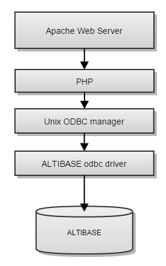
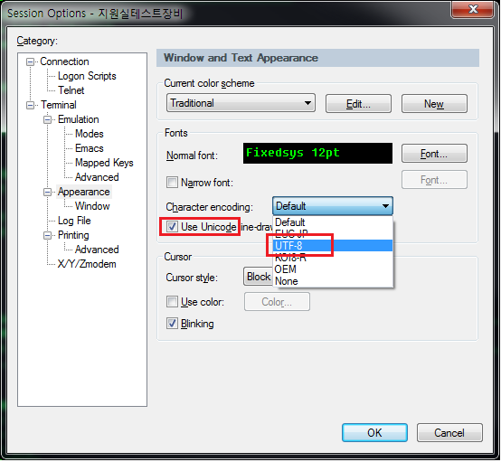

현상
PHP를 사용하는 web 페이지에서 한글 조회시 한글이 깨지는 경우는 있습니다.
자주 발생하는 한글 깨짐 현상의 원인과 해결 방법에 대해서 알아봅니다.
PHP 실행구조
odbc driver manager 인 unixODBC ( http://www.unixodbc.org/ ) 와 ALTIBASE 가 제공하는 odbc driver를 사용하여 php 페이지에서 ODBC API를 통해 ALTIBASE HDB DB에 접근할 수 있습니다.
ALTIBASE 와 PHP 를 연동하는 방법에 대한 설명은 『 ALTIBASE PHP 연동가이드』 를 참고하시기 바랍니다.

주요 원인
한글이 깨지는 현상은 web 서버 설정, php 설정, unixODBC 설정등 다양한 부분에서의 설정 문제로 발생할 수 있으므로 먼저 unixODBC에서 한글을 포함하는 DB 결과가 정상적으로 출력되는 것을 먼저 확인해야 합니다.
unixODBC에서 제공하는 $UNIXODBC_HOME/bin/isql 유틸리티를 사용하여 DB에 쿼리를 실행해서 한글을 포함한 쿼리 결과가 정상적으로 출력되는 지 확인 후 다음으로 php 설정을 확인합니다.
이 후 마지막 단계로 web 서버 설정이나 web page 설정을 확인해서 한글 관련한 character set 설정에 문제가 없는지 확인합니다.
ODBC 설정에서 NLS_USE 설정
unixODBC 설정인 odbc.ini 에 DB 에 connection 에 사용되는 client character set 을 지정하는 NLS_USE 설정이 있습니다. 이 설정값과 DB의 character set 설정이 맞지않는 경우 한글 출력에 문제가 있을 수 있습니다.
이 프라퍼티는 DB의 character set 과 동일한 값으로 설정해야 합니다.
odbc.ini파일에 설정된 내용
[Altiodbc]
Driver = /home/omegaman/altibase_home/lib/libaltibase_odbc-64bit-ul64.so
Description = altibase odbc
User = SYS
Password = MANAGER
ServerType = altibase
Server = 127.0.0.1
User = SYS
Port = 21038
NLS_USE = MS949
Database = mydb
FetchBufferSize = 64
ReadOnly = no
TraceFile = /tmp/odbc.log
Trace = 1
터미널창에서 한글 지원 코드 설정
DB에서 정상적으로 데이타를 가져왔음에도 이를 출력하는 터미널 창에서 한글 문자셋 출력을 지원하지 못할 경우 한글이 제대로 출력되지 못할 수 있습니다.
DB character set 이 UTF8 로 설정되어 있는 경우 window command 창에서도 유니코드를 보여줄 수 있도록 코드 페이지(chcp 명령)가 설정되어야 하며 그렇지 않을 경우 한글이 정상적으로 출력되지 않습니다.
C:\Users\omegaman>isql -s 192.168.1.35 -port 20416
iSQL> set vertical on;
iSQL> select nls_use, nls_characterset from v$nls_parameters;
NLS_USE : US7ASCII
NLS_CHARACTERSET : UTF8
iSQL> exit;
C:\Users\Altibase>chcp 65001 <-- DB의 문자셋이 unicode인 UTF8 이므로 콘솔 문자도 유니코드(65001) 로 설정되어야 합니다.
Active code page: 65001
일반적으로 많이 사용하는 터미널 접속 프로그램 인 Secure CRT 와 같은 프로그램도 UTF8 인 한글 문자를 출력할 경우 session 설정중에 unicode 관련 설정이 맞게 설정되어 있어야 한글이 정상 출력됩니다.

PHP 설정에서 변수에 설정되는 최대 길이 설정
php 프로그램을 하는 경우 데이터가 큰 varchar 또는 clob 데이터가 깨지거나 같은 데이터가 반복적으로 나오는 경우가 있습니다. 만약 특정부분 부터 데이터 출력에 문제가 있다면 odbc 설정 부분을 살펴봐야 합니다.
증상이 위와 같은 경우 php.ini에서 odbc.defaultlrl 값을 데이터가 모두 포함될 수 있도록 변경하여 줍니다.
예를들어, 컬럼이 varchar(65536)일 경우 기본 설정 값 odbc.defaultlrl = 4096에 의해 데이터가 잘 못 출력 될 수 있습니다.
odbc.defaultlrl = 65536으로 변경하게 되면 64KByte까지는 정상적으로 데이터가 출력됨을 확인 할 수 있습니다.
일반적으로 php.ini는 /etc 밑에 있으나, 이는 설정에 따라 달라 질 수 있습니다.
{kind=link}
{kind=link}